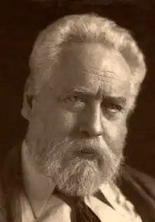

Вільям Ернест Генлі ( William Ernest Henley , 23 серпня 1849 — 11 липня 1903) — британський поет, прозаїк, редактор і критик, найбільш відомий завдяки своїй віршованій збірці A Book of Verses (1888), що включає його найвідоміший вірш "Invictus".
Народився у місті Гов, графство Сассекс, у родині книгаря. Генлі здобув освіту в гімназії Crypt School у Глостері, а потім навчався в Університеті Сент-Ендрюс. У дитинстві він страждав на туберкульоз кісток, через що йому ампутували одну ногу. Втрата кінцівки, тривале лікування та боротьба з хворобою наклали глибокий відбиток на його світогляд і творчість. У 1870-х Генлі познайомився з шотландським хірургом Джозефом Лістером, який зберіг йому другу ногу завдяки новим методам антисептики. Під час перебування в лікарні Генлі написав низку віршів, що пізніше увійшли до циклу In Hospital , який започаткував новий реалізм у британській поезії. Генлі був добре інтегрований у літературне коло Лондона кінця ХІХ століття. Його товаришем був Роберт Льюїс Стівенсон — автор Острова скарбів , який, за деякими свідченнями, змалював образ пірата Джона Сільвера саме з Генлі, натхнений його сильною особистістю та характером. Окрім поетичної діяльності, Генлі був редактором декількох впливових літературних журналів, зокрема The Magazine of Art та The National Observer . Він відкривав нові імена в літературі, підтримував молодих авторів і мав вагомий вплив на літературну думку свого часу. Генлі був одружений з Анною Бойл, і пара мала доньку Маргарет, яка померла в дитинстві. Її образ був використаний як прообраз для персонажа Венді в Пітері Пені Дж. М. Баррі. Помер Вільям Ернест Генлі у 1903 році внаслідок ускладнень після операції, пов'язаних із його хронічним станом здоров'я.